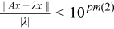
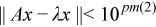

Intel® oneAPI Math Kernel Library Developer Reference - Fortran
The input parameters for Extended Eigensolver routines are contained in an integer array named pm. To call the Extended Eigensolver interfaces, initialize this array using the mkl_sparse_ee_init routine.
Parameter |
Default |
Description |
|---|---|---|
pm(1) |
0 |
Reserved for future use. |
pm(2) |
6 |
Relative error stopping criteria ε (ε =10-fpm(2))(tolerance) |
pm(3) |
0 |
Specifies the algorithm to use:
|
pm(4) |
* |
This parameter is referenced only for Krylov Method. It indicates the number of Lanczos vectors (NCV) generated at each iteration. This parameter must be less than or equal to size of matrix and greater than number of eigenvalues (k0) to be computed. If unspecified, NCV is set to be at least 1.5 times larger than NEV. |
pm(5) |
* |
Maximum iteration number. If unspecified, this parameter is set to 10000 for Krylov method and 60 for Subspace iteration method. |
pm(6) |
0 |
Power of Chebychev expansion for approximate spectral projector. Only referenced when fpm(3)=1 |
pm(7) |
1 |
Referenced only for Krylov Method. If 0, then compute eigenvalues only. If 1, then compute eigenvalues and eigenvectors. Subspace iteration method always computes eigen/singular vectors. You must allocate the required memory space. |
pm(8) |
0 |
Convergence stopping criteria. If 0, the stopping criteria relative to eigenvalue/singular value applies. The iteration stops if:  If 1, the absolute stopping criteria applies. The iteration stops if:  |
pm(9) |
0 |
Specifies if the solver must compute the true residual explicitly for Krylov Schur method. If 0, a cheap formula is used instead of explicit matrix vector multiplication that gives an estimation of eigenvalue residual. If 1, the solver computes true residuals. |
pm(10) to pm(129) |
- |
Reserved for future use. |